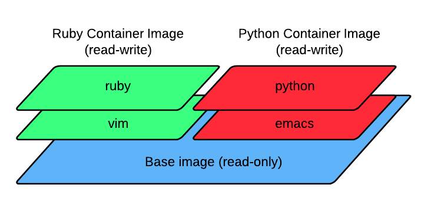

Introduction of Docker
A tool that brings Linux container to your life
By Kim, Hirokuni
What is Docker?
Docker is a wrapper of Linux container powered by the AUFS
What is Linux container? (aka LXC)
It is a one of virtualization methods. With LXC, you can run multiple Linux machines inside a host Linux machine.
Your question
You can do this with VMware, Xen, and VirtualBox. Why bothered with LXC?
My answer: because it is lightweight.
What I mean by lightweight is...
- You can boot/stop container lightning fast
- You can run much more than containers at the same time than VM
- Image of container is much smaller than that of VM
So, LXC is attractive because of its lightweight nature
What is AUFS?
AUFS (Another UnionFS) is a filesystem that allows you to mount multiple different filesystems into one.
Real use case:
knoppix's LiveCD
Docker Basics
Running container
Pulling image
$ docker pull kimh/docker-demo
Running container and execute ls -la
$ docker run kimh/docker-demo /bin/bash -c "ls -la"
Another example
$ docker run kimh/docker-demo /bin/bash -c '
for i in 1 2 3 4 5
do
echo "${i} round..."
sleep 1
done
'
Running container (continued)
Running command in background
$ CONTAINER_ID=`docker run -d kimh/docker-demo /bin/bash -c '
for i in 1 2 3 4 5
do
echo "${i} round..."
sleep 1
done
'`
Checking running containers
$ docker ps
Inspecting console output
$ docker logs $CONTAINER_ID
Saving container to image
Docker doesn't keep it's state unless you commit
$ docker commit ContainerID docker-demo
Creating your own image with Dockerfile
Dockerfile: a file where you write instructions that tells Docker how you want to make your image
Example of Dockerfile
FROM ubuntu MAINTAINER Kim, Hirokuni # make sure the package repository is up to date RUN apt-get update RUN apt-get ruby
$ docker build -t kimh/dokky .
Pushing to repository
To: Kim's Docker repo
$ docker push kimh/dokky
Key Technology of Docker
AUFS
Less disk space
You only need disk space for the difference between your image and base image (stacking filesystem)
Example of the stacking
Faster disk access for containers
Buffer cache of disk is shared by all containers based on the same base image
Easy maintenance of image
Modify your base image, then rebuild other images from Docker file. The modification is applied to all of your images
Interesting Projects powered by Docker
- dotCloud PaaS by dotCloud (Creator of Docker) https://www.dotcloud.com/
- Dokku (mini PaaS made by 100+ lines of bash) by Jeff Lindsay https://github.com/progrium/dokku
- Strider (next-gen cloud CI&CD) by FrozenRidge http://frozenridge.co
- Baleen (Container-based parallel test runner) by Me https://github.com/kimh/baleen
About baleen (おまけ)
What is Baleen?
Baleen allows you to run your ruby tests in parallel and totally isolated environment
Apparently, the motivation of the project is Avishai's cry
NICE tests passes locally, but not when running subsequently on Jenkins (TдT)
Also, Docker's lightweight nature fits testing infrastructure
Key Technology
- Docker Remote API (controlling Docker from Ruby)
- Celluloid::IO (handling asynchronous Docker command)

Demo
Install baleen gem
$ gem install baleen
Run baleen server
$ baleen-server start --debug
Run baleen client
$ baleen cucumber --host 192.168.50.5 \
--image kimh/baleen-poc \
--work_dir /git/baleen/poc \
--before_command "source /etc/profile" \
--concurrency 3